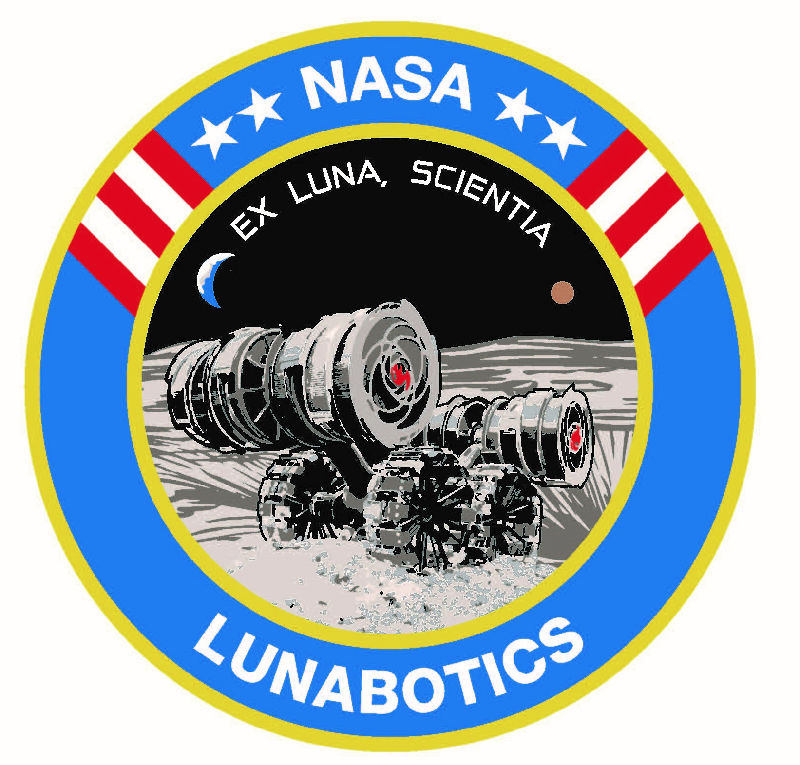
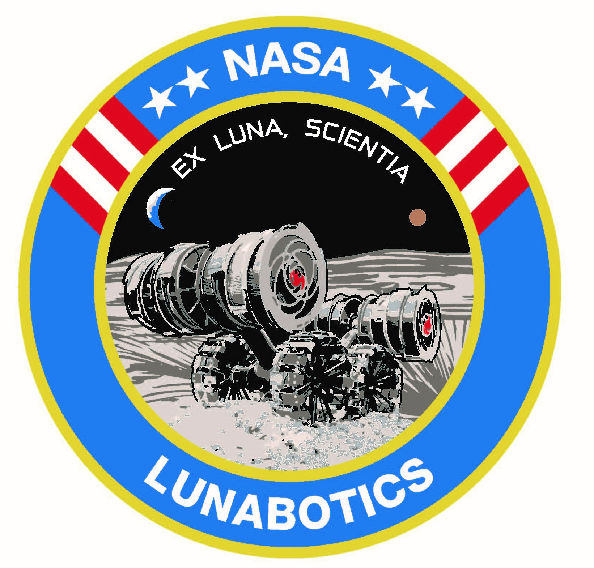
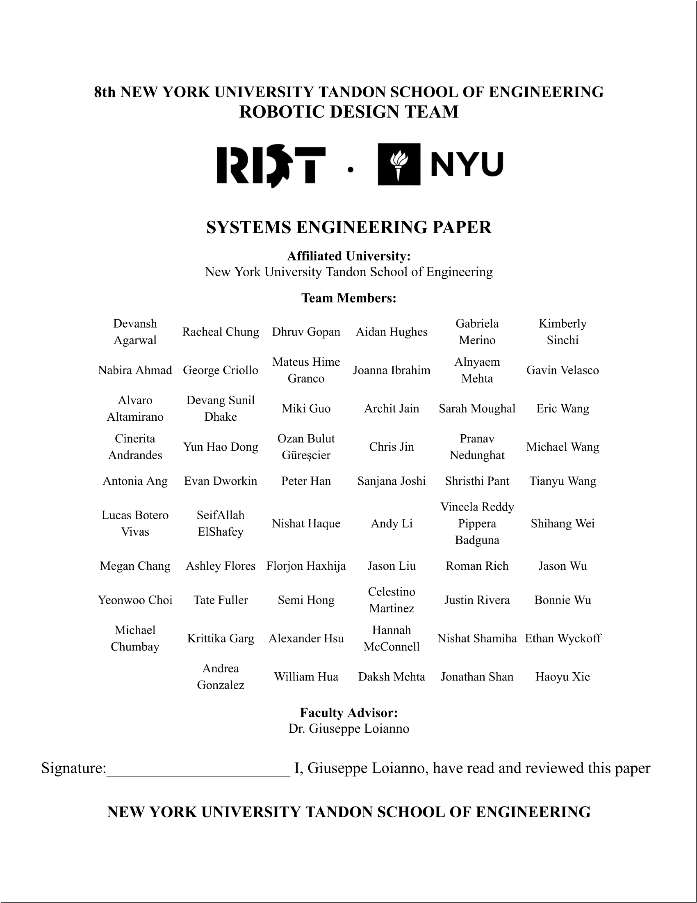
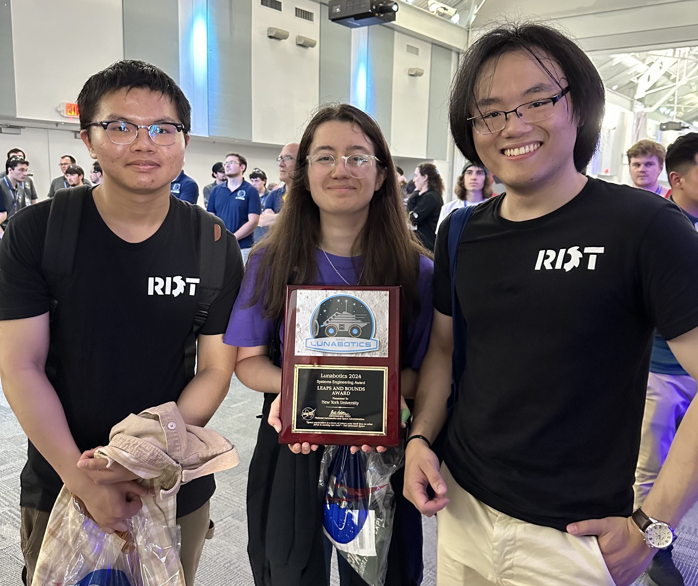

Robotic Design Team
Systems Engineer
December 2023 - May 2024
About three months into my second year at NYU’s Robotics Design Team (RDT), openings for the position of Mechanical System Engineer came up. At that point, I had just begun implementing a new workflow with my members on the excavation team (see RDT Mechanical Design Lead for more info), so I wasn’t swamped with work and figured I’d apply. I wanted to gain experience working with the larger, overarching design of the robot and was game to learn something new.
Some background for what system engineers in RDT do: the team participates in NASA’s Lunabotics Challenge, where we have to design and manufacture a robot that excavates lunar regolith in an academic year. As part of this challenge, each team has to write a systems engineering paper, which documents how the team incorporated systems engineering into their design process. This includes authoring requirements for the robot, creating a Concept of Operations (ConOps), a System Hierarchy, and hosting periodic reviews such as the system requirement review (SRR), the preliminary design review (PDR), and the critical design review (CDR) to ensure requirements are being met.
 

I was chosen along with another mechanical engineer to be the new Mechanical System Engineers. She was a pleasure to work with and we always had each other’s back, which was really important since we were immediately thrown into the thick of it. The previous system engineers had stepped down in the middle of creating the ConOps and System Hierarchy, so we both learned a lot as we went. Along with the electrical and software systems engineers, we finalized the ConOps, which outlines how the robot operates through a run (e.g. robot localizes the excavation zone, robot moves to excavation zone, etc.), and the System Hierarchy, which breaks down the robot into different subsystems (excavation, locomotion, etc.).
Following this, the other system engineers and I created the requirements for the robot, and I learned how to use requirements to guide the vision of the team’s robot and how to break down large requirements into smaller derived requirements. I also learned about verification and validation of requirements, with verification ensuring that the robot satisfies requirements, and validation meaning going back and seeing if the requirements actually satisfy the overarching goals for the robot. This included holding the aforementioned SRR, which was an initial review of the requirements, the PDR, which saw if the initial design met the requirements, and the CDR, which saw if the final design met the requirements.
We also created trade studies, which compare different designs based on various parameters (weight, volume, price, etc.) and allowed the team to select the best one. One last piece of groundwork that the system engineers and I created were interface control documents, which identify all the interfaces between each competency (mechanical, electrical, and software), as well as between each subsystem (excavation, locomotion, etc.). These interfaces tell each competency and subsystem what they need to provide others, allowing for a more efficient work process.
Another responsibility of the system engineers was to serve as the major lines of communication between different competencies. While there was some informal communication, such as where I would reach out directly to the technical leads of other competencies as the mechanical lead of the excavation system, it was at system engineering meetings where the system engineers would represent their competency and communicate their needs to the other system engineers, who would then relay it to the technical leads during competency meetings. As such, the other mechanical system engineer and I were responsible for communicating the needs of the mechanical competency to electrical and software, as well as communicating their needs to the mechanical technical leads.
System engineers were also responsible for coordinating testing of the robot. This not only included scheduling testing and figuring out when everyone was available, but also coordinating transportation (I learned how to drive a UHaul!). Additionally, once we were at the testing location (our local beach), we organized how the testing would run in order to verify that the robot meets its requirements. It gave me a new appreciation for how hectic and complicated testing can be, along with valuable experience.

Near the end of the academic year, we also gave a presentation for NASA, explaining the design of our robot and briefly going over various aspects of system engineering and project management. This would be judged by a panel of NASA employees, and I was responsible for discussing the mechanical portion of the design, testing, and our innovations over our previous designs (the other mechanical systems engineer was also a project manager, so she took that part of the presentation). We did quite well (the NASA judges didn’t have many questions afterwards), and it gave me more experience in giving technical presentations.
Lastly, we had to summarize all of our work in system engineering throughout the year in the Systems Engineering Paper. The purpose of the paper is to demonstrate how they used the systems engineering process in designing, building, and testing their robot. I wrote about the major reviews (SRR, PDR, and CDR), trade studies on the locomotion and excavation system, the system interface diagram and interfaces, and the final mechanical design of the robot. We worked on the paper for the second half of the academic year, and I gained a great deal of experience in technical writing as a result (you can see our Systems Engineering Paper below).
At the end of the year, our work as systems engineers was successful. It streamlined the design process by setting clear guidelines for our technical leads, allowed for communication between competencies, and facilitated the testing of the robot. We also did very well on our NASA deliverables, winning the Systems Engineering Paper Leaps & Bounds Award, which is awarded to a team that showed significant improvement over the previous years in their application of systems engineering to the development of their robot system, and contributing to our team placing eighth in the overall competition!
On my end, I learned systems engineering skills such as writing the Conops, the System Hierarchy, and requirements, conducting trade studies, and creating interface control documents. I also gained more experience in technical writing, public speaking, organization of testing, and communication with engineers from other fields. Being a systems engineer was a very rewarding and valuable experience, and I look forward to leading the process as a Team Lead this year!
